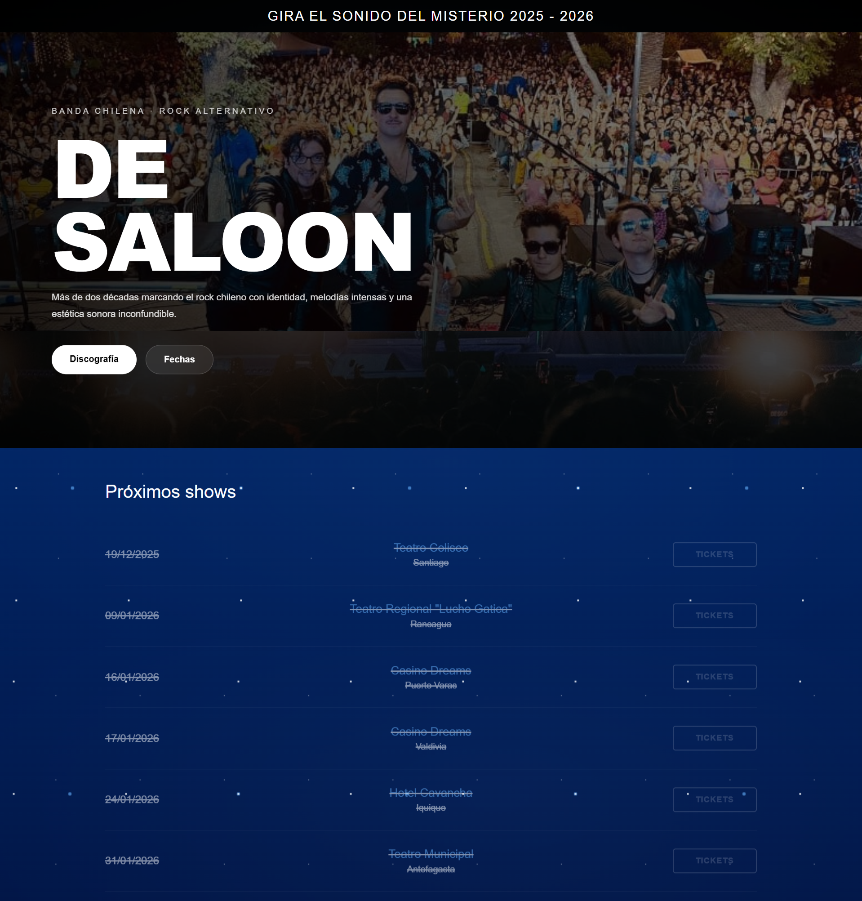
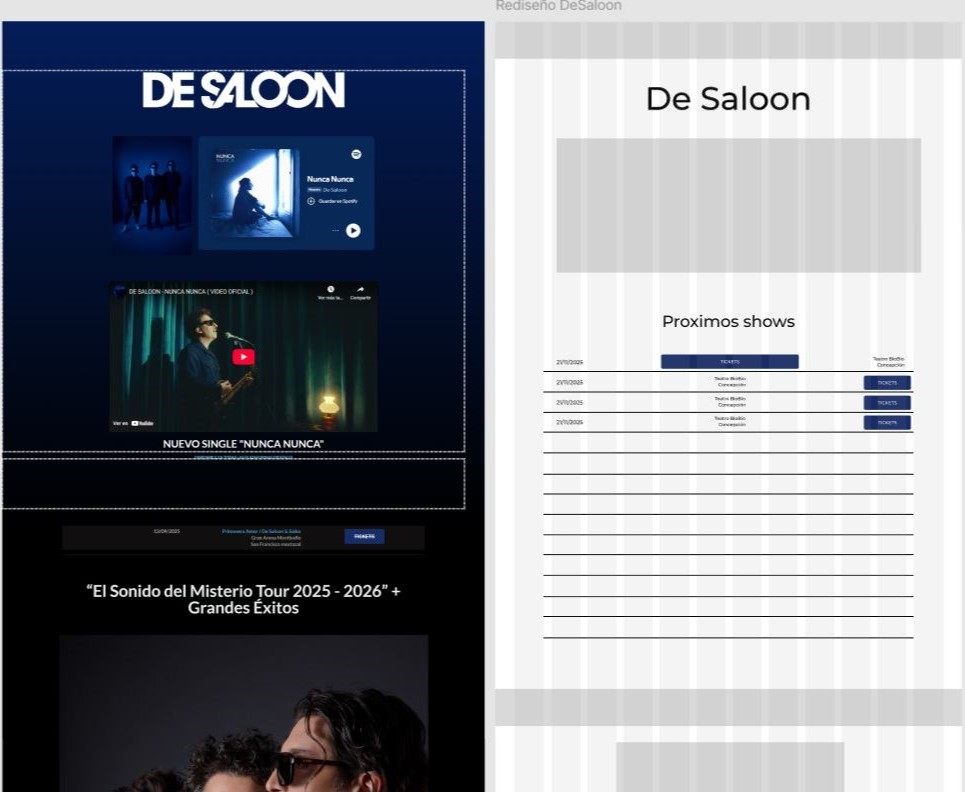
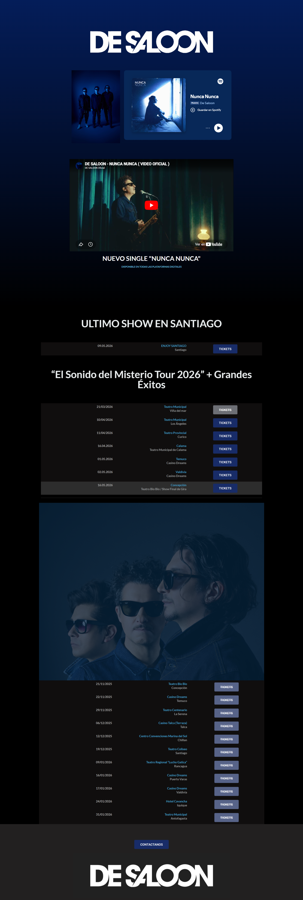
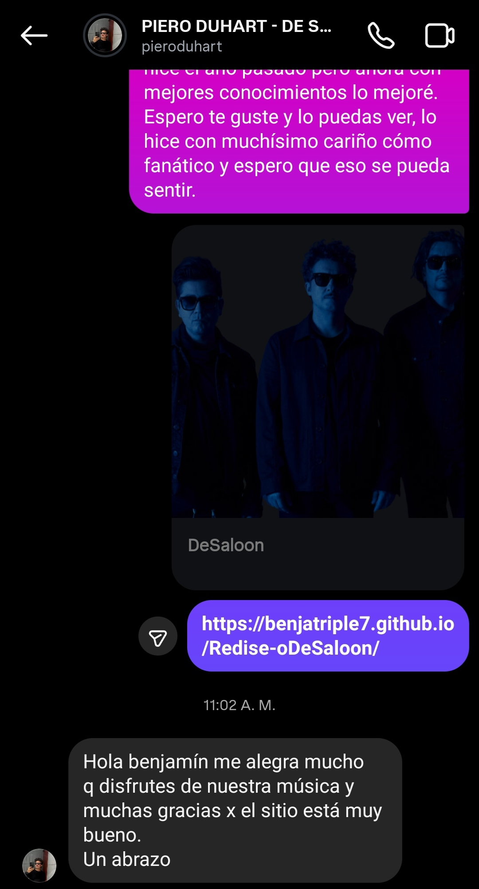

Caso de estudio
Desaloon
Rediseño del sitio oficial de la banda enfocado en modernizar su interfaz, mejorar la adaptación móvil y potenciar la promoción del tour.


Problema
Sitio genérico y sin intención de diseño
El problema no era el contenido, sino la falta de criterio en su implementación.
El sitio original presentaba una estructura básica y poco trabajada, con una interfaz que carecía de jerarquía visual y consistencia. Además, tenía problemas de adaptación en dispositivos móviles y una composición que transmitía poca intención de diseño, generando una experiencia poco atractiva para el usuario.
Esto provocaba desinterés y abandono, afectando directamente la percepción de profesionalismo de la banda y el impacto de su promoción.
Análisis
Foco visual mal distribuido
Elementos mal jerarquizados reducían el impacto del contenido principal.
La composición del sitio estaba dominada por una imagen que superaba el alto de la pantalla, desplazando el contenido relevante —como las fechas del tour— fuera del foco inicial del usuario. Esto rompía la lógica de exploración y debilitaba la intención principal del sitio.
Además, se detectaron inconsistencias visuales y una falta de sistema en el uso de tipografías, tamaños y espaciados, lo que generaba ruido visual y una lectura poco fluida.


Proceso
Replanteamiento estructural y visual
Se abordó el rediseño desde la arquitectura de la información hasta el detalle visual.
Se desarrolló un proceso de análisis que incluyó benchmarking de sitios de bandas, definición de jerarquía de contenido y exploración visual mediante wireframes y referencias gráficas.
Se eliminaron elementos que no aportaban valor —como imágenes redundantes y títulos sobredimensionados— y se reorganizó el contenido para priorizar las fechas del tour. Al mismo tiempo, se mantuvieron componentes clave del sitio original, integrándolos dentro de una estructura más coherente y dinámica.
Solución
Interfaz dinámica y orientada al contenido
Cada decisión responde a una intención clara dentro de la experiencia.
Se rediseñó la arquitectura del sitio priorizando las fechas del tour como elemento principal, facilitando su acceso y lectura. Se incorporó una galería conectada al contenido visual de la banda, reforzando su identidad y presencia digital.
Se añadió un footer estructurado con enlaces a redes sociales y un tratamiento visual coherente, reemplazando una solución básica del sitio original. Además, se integró un efecto visual sutil en el fondo para aportar dinamismo sin interferir en la lectura.
El resultado es una interfaz más moderna, adaptable y alineada con el contexto actual de consumo digital.



Reconocimiento directo
El proyecto llegó a la banda ;)
Una vez finalizado el rediseño, compartí el proyecto directamente con el cantante de De Saloon a través de Instagram. La respuesta confirmó que la propuesta logró transmitir correctamente la identidad, intención y experiencia que buscaba construir para la banda.
Resultado
Experiencia más atractiva y profesional
El rediseño transforma un sitio básico en una experiencia visual coherente, donde el contenido principal se presenta con claridad y jerarquía. Esto permite una navegación más intuitiva, aumenta el tiempo de permanencia y mejora la percepción de profesionalismo de la banda.